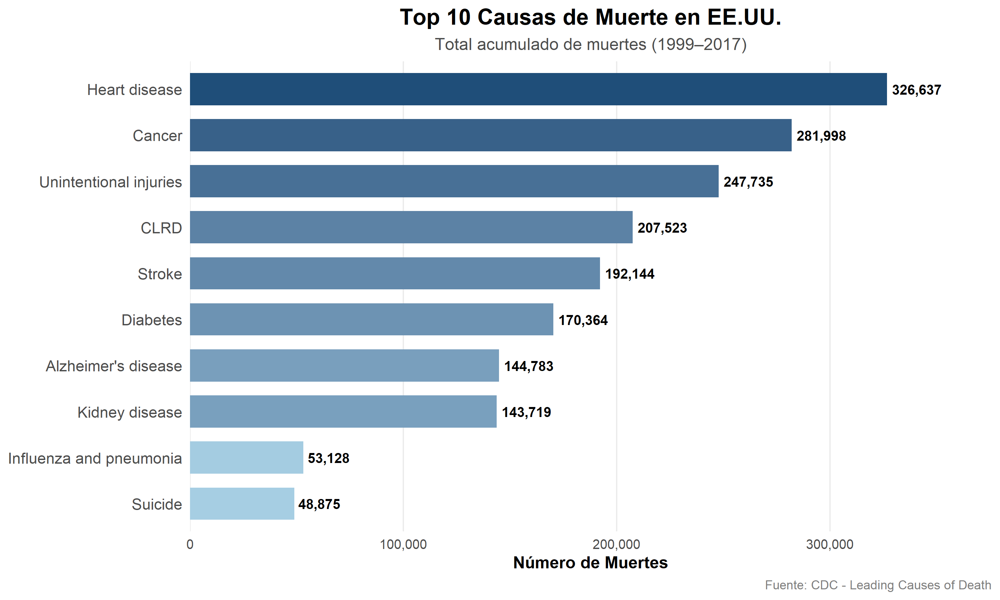

Distribución por causas principales (top 10)
library(knitr)
library(kableExtra)
library(scales)
top10_causas <- data.frame(
causa = c("Heart disease", "Cancer", "Unintentional injuries",
"CLRD", "Stroke", "Diabetes",
"Alzheimer's disease", "Kidney disease",
"Influenza and pneumonia", "Suicide"),
total_muertes = c(326637, 281998, 247735,
207523, 192144, 170364,
144783, 143719,
53128, 48875)
)
top10_causas %>%
mutate(total_muertes = scales::comma(total_muertes)) %>%
rename("Causa" = causa,
"Total de muertes" = total_muertes) %>%
kable(
caption = "Top 10 causas de muerte en EE.UU. (1999–2017)",
align = c("l", "r")
) %>%
kable_styling(
bootstrap_options = c("striped", "hover", "condensed"),
full_width = FALSE,
position = "center",
font_size = 12
) %>%
row_spec(0, background = "#04376B", color = "white", bold = TRUE) %>%
column_spec(1, width = "25em") %>%
footnote(
general = "Datos del CDC - Leading Causes of Death",
general_title = "Fuente:",
footnote_as_chunk = TRUE
)| Causa | Total de muertes |
|---|---|
| Heart disease | 326,637 |
| Cancer | 281,998 |
| Unintentional injuries | 247,735 |
| CLRD | 207,523 |
| Stroke | 192,144 |
| Diabetes | 170,364 |
| Alzheimer’s disease | 144,783 |
| Kidney disease | 143,719 |
| Influenza and pneumonia | 53,128 |
| Suicide | 48,875 |
| Fuente: Datos del CDC - Leading Causes of Death |
library(ggplot2)
library(scales)
top10_graf <- data.frame(
causa = c("Heart disease", "Cancer", "Unintentional injuries",
"CLRD", "Stroke", "Diabetes",
"Alzheimer's disease", "Kidney disease",
"Influenza and pneumonia", "Suicide"),
total_muertes = c(326637, 281998, 247735,
207523, 192144, 170364,
144783, 143719,
53128, 48875)
) %>%
arrange(total_muertes) %>%
mutate(causa = factor(causa, levels = causa))
ggplot(top10_graf, aes(x = causa, y = total_muertes, fill = total_muertes)) +
geom_bar(stat = "identity", width = 0.7, show.legend = FALSE) +
geom_text(aes(label = scales::comma(total_muertes)),
hjust = -0.1, size = 3.5, fontface = "bold") +
scale_fill_gradient(low = "#A6CEE3", high = "#1F4E79") +
scale_y_continuous(
labels = scales::comma,
expand = expansion(mult = c(0, 0.15))
) +
coord_flip() +
labs(
title = "Top 10 Causas de Muerte en EE.UU.",
subtitle = "Total acumulado de muertes (1999–2017)",
x = NULL,
y = "Número de Muertes",
caption = "Fuente: CDC - Leading Causes of Death"
) +
theme_minimal(base_size = 12) +
theme(
plot.title = element_text(face = "bold", size = 16, hjust = 0.5),
plot.subtitle = element_text(size = 12, hjust = 0.5, color = "gray30"),
plot.caption = element_text(size = 9, color = "gray50", hjust = 1),
axis.title = element_text(face = "bold"),
axis.text.y = element_text(size = 11),
panel.grid.major.y = element_blank(),
panel.grid.minor = element_blank()
)
Interpretación: La tabla y el gráfico muestran la distribución acumulada de muertes por causa en EE.UU. entre 1999 y 2017. Las enfermedades cardíacas lideran con más de 326,000 muertes totales, seguidas por el cáncer (282,000) y las lesiones no intencionales (247,000), consolidándose como las tres principales causas de mortalidad en el período. Las enfermedades respiratorias crónicas (CLRD), el stroke y la diabetes ocupan el rango intermedio, mientras que el Alzheimer, la enfermedad renal, la influenza y neumonía y el suicidio cierran el top 10. Este panorama confirma el peso estructural de las enfermedades crónicas en la mortalidad estadounidense y sienta las bases para el análisis de las tendencias temporales y geográficas desarrollado en las secciones siguientes.